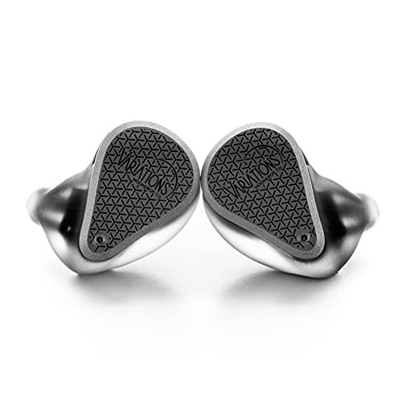

Moondrop Variations

Трибридная модель с глубоким саббасом, чистой серединой и детальной верхней частью диапазона.
Дополнительные фотографии
Технические характеристики
| Конструкция | Внутриканальная, трибридная |
|---|---|
| Драйверы | Динамический + балансные арматуры + электростатические |
| Кроссовер | 3-полосный |
| Кабель | Съёмный, 2-pin |
| Корпус | Полимерная лицевая часть и индивидуальная форма |
Сильные стороны
- Глубокий контролируемый саббас
- Высокая детализация
- Хорошая многослойность сложных записей